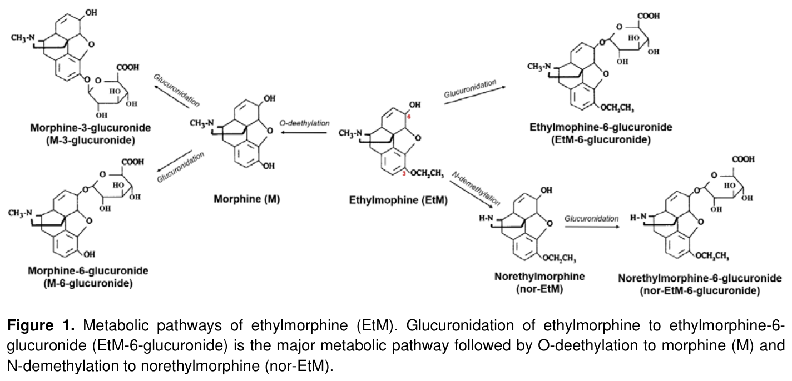

Technical Letters · TL22
Edition v2.0, 2021 (version 2.0) · effective 1 January 2021 · superseded
Retrieved on 25 November 2026 from https://www.wada-ama.org/sites/default/files/2023-02/tl22_ethylmorphine_v2.pdf
Editions: v3.0, 2021 (current) · v2.0, 2021 · v1.0, 2020
p. 1
ETHYLMORPHINE
1.0 Introduction
WADA wishes to draw the attention of the Laboratories to the following issue that may affect Laboratory operations. This pertains, in particular, to the detection of the Threshold Substance Morphine (M) at a concentration higher than the Decision Limit (DL) in urine Samples, which may result from the administration of the permitted drug Ethylmorphine (EtM).
In humans, EtM, which is the 3-ethoxy homologue of M, is mainly metabolized to ethylmorphine-6-glucuronide (EtM-6-glucuronide), and to M by O-deethylation by the microsomal enzyme CYP2D6. In addition, EtM is also biotransformed to Norethylmorphine (nor-EtM) by N-demethylation (Figure 1)[1,2,3].

Figure 1. Metabolic pathways of ethylmorphine (EtM). Glucuronidation of ethylmorphine to ethylmorphine-6-glucuronide (EtM-6-glucuronide) is the major metabolic pathway followed by O-deethylation to morphine (M) and N-demethylation to norethylmorphine (nor-EtM).
The literature indicates that, following the administration of EtM, the urinary concentration of total EtM (free and conjugated forms) decreases more rapidly than the concentration of total M (free and conjugated forms)[4]: the calculated half-life (t1/2) of total EtM in urine was 3-4 times shorter than the t1/2 of total M. It has been also described that 24 hours after the administration of EtM, only M, M-3-glucuronide, M-6-glucuronide and N-demethylated Metabolites of EtM (nor-EtM and nor-EtM-6-glucuronide) were detected[2,4].However, a wide inter-individual variation was observed in the formation of M-3- and M-6-glucuronides, which does not allow to distinguish the source of M based solely on the concentration ratio of M to EtM[3,4]. Therefore, to determine the potential origin of M from a permitted administration of EtM, an additional test for the presence of EtM and nor-EtM shall be included in the Confirmation Procedure (CP) for M.
p. 2
2.0 Analysis and Reporting Requirements
When a Sample with a total M concentration greater than the DL (adjusted DL if the Sample SG > 1.018 [5]) includes the presence of EtM and/or nor-EtM, the Laboratories shall report the finding as follows:
· Negative Finding if:
- The concentration of total M (free and conjugated forms) is equal to or lower than (≤) the concentration of EtM (free and conjugated forms);
OR
- The ratio of total M to total nor-EtM (free nor-EtM + nor-EtM-6-glucuronide) is equal to or lower than (≤) 20.
- Adverse Analytical Finding (AAF) for M if:
- The concentration of total M (free and conjugated forms) is greater than (>) the concentration of EtM (free and conjugated forms);
AND
- The ratio of total M to total nor-EtM (free nor-EtM + nor-EtM-6-glucuronide) is higher than (>) 20.
When reporting an AAF for M in the presence of EtM, a comment shall be included in the Test Report indicating that "Morphine was detected at a concentration greater than the DL, which was also higher than the concentration of total ethylmorphine detected in the Sample. In addition, the ratio of total morphine to total norethylmorphine was higher than 20. This is consistent with the mixed intake of morphine and ethylmorphine."
[Comment: It is recommended that the Laboratories evaluate the rate of hydrolysis of EtM-glucuronide and nor-EtM-6-glucuronide (if the Reference Material is available) in their CP method validation, if applicable. The evaluation should also confirm the lack of artifact(s) formation. In the absence of nor-EtM-6-glucuronide Reference Material, the evaluation should consider a similar conjugate such as norcodeine-6-glucuronide]
3.0 References
-
Ripel, Å. et al. Morphine formation after intake of ethylmorphine. Pharmacol Toxicol 70(3): 228-229, 1992.
-
Aasmundstad, T. A. et al. Biotransformation and pharmacokinetics of ethylmorphine after a single oral dose. Br. J. Clin. Pharmacol. 39(6): 611-620, 1995.
-
Rane, A., Modiri A. R., and Gerdin E. Ethylmorphine O-deethylation cosegregates with the debrisoquin genetic metabolic polymorphism. Clin. Pharmacol. Ther. 52(3): 257-264, 1992.
-
Popa, C., Beck, O., and Brodin, K. Morphine formation from ethylmorphine: Implications for drugs-of-abuse testing in urine. J. Anal. Toxicol. 22(2): 142-147, 1998.
-
WADA Technical Document TD DL: Decision Limits for the Confirmatory Quantification of Threshold Substances. https://www.wada-ama.org/en/what-we-do/science-medical/laboratories
Retrieved on 25 November 2026 from https://www.wada-ama.org/sites/default/files/2023-02/tl22_ethylmorphine_v2.pdf